Algernon Blackwood HOME


-
Description
Algernon Blackwood was a prolific, popular, and influential writer, often associated with “weird fiction,” but whose work spans an array of genre, subject, form, and audience.
“The Willows,” his best known work and Lovecraft’s favorite supernatural tale, narrates a pilgrimage by two men across central Europe⁠—a journey Tolkien’s readers will recognize as Frodoesque. Both Lovecraft and Tolkien acknowledged Blackwood’s influence and this influence is unmistakable any time Tolkien as author finds himself among ancient trees, climbing a mountain, or afloat on a river. For Lovecraft, it is Blackwood who transforms the “higher space” of Einstein’s annus mirabilis into a perilous firmament to be filled with cosmic horrors and it is Blackwood who first writes the eldritch text that is to become Lovecraft’s Necronomicon. But, while Blackwood was an explorer of the macabre corners of “ghostland;” he was captivated by the beauty of nature, believed in “traveling light,” and never confined himself anywhere.
It had been one of Blackwood’s life goals to become a “holy man.” He lived itinerant, unwed, and wrote only because he “could not keep it back.” His words were published in books, magazines, journals, newspapers; presented on stage; and broadcast on radio and television. Writing for any reader, he was published by The Country Gentleman, Lady’s Realm, and⁠—⁠for children⁠—⁠in The Merry Go Round. He wrote for both The Methodist Magazineand The Occult Review. One of his lesser-read stories was printed exclusively by The Burrowa Newsof New South Wales, in Austalia.
Even Blackwood lost count of what he had published, so that no definitive bibliography exists. Though the present collection is not exhaustive⁠—doubtless some works are lost to time⁠—it is the most extensive of its kind. The fiction includes 16 novellas, a 3-act play, 145 short stories, 5 poems, and 3 songs. Supplementing this are 53 non-fiction works. Most provide background to the fiction stories and some are stories themselves.
While there is no “Blackwood Universe” in the modern sense; themes, characters, and settings are often shared. When Blackwood writes, the categories of fiction, non-fiction, and autobiography become indistinct, some works difficult to place. Of the works in this collection, twenty-one were published for children, but again the distinction is often arbitrary.
In the end, it is all Blackwood.
-
Epigraph
from"My Own Past" My Own Past by Maude M. C. Ffoulkes, 1915“Blackwood was also one of the fortunate beings who, on the other side of custom's thick-set hedge, are able to see the gleaming eyes of wild spirits.”⁠
—Maude M. C. Ffoulkes, 1915 #autobiography -
Foreword
Algernon Blackwood: The Sherlock Holmes of Ghostland Current Opinion, May 1914Introduction of Algernon Blackwood as a writer who combines elements of the occult with modern science, particularly in his book "John Silence." #review
-
A Mysterious House
Belgravia, Vol. 69
A reputation for being haunting dissuades prospective tenants from a rental property. #england
-
Christmas in England
Methodist Magazine Volume 32 1890 pg481
"In the classic city of Oxford, the stronghold of ancient customs and ancient opinions, …" #england #christmas
-
About the Moravians
Methodist Magazine Vol. 33 1891, pg166
The history and traditions of a central European Protestant group remain relevant to the present-day. #christian
-
In the Jura-Neuchatel
Methodist Magazine Vol. 33 1891, pg551
Tolkein's Misty Mountains are the Jura and Neuchatel is Rivendell. #jura #jrrt

 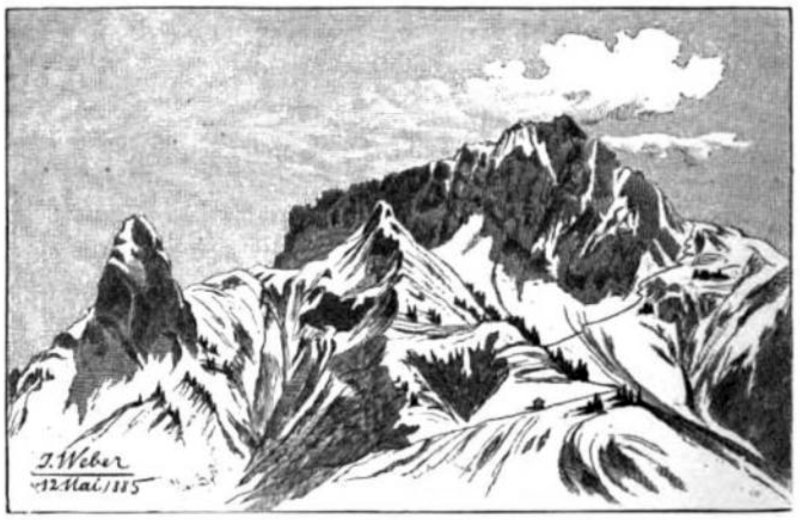
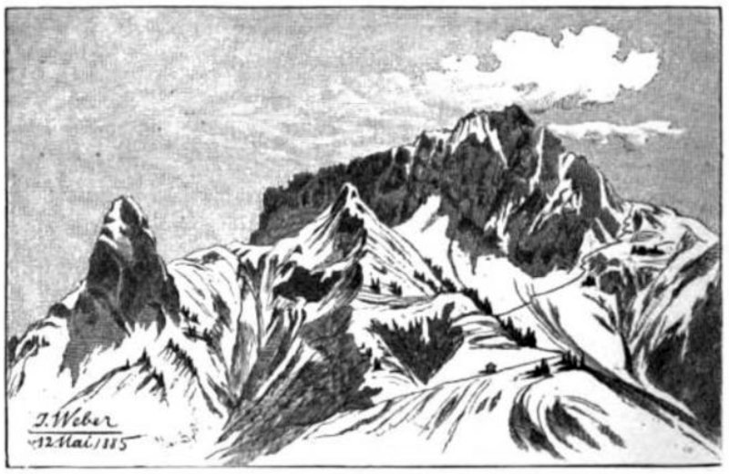

 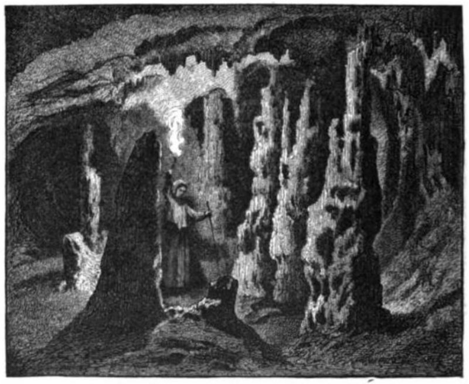
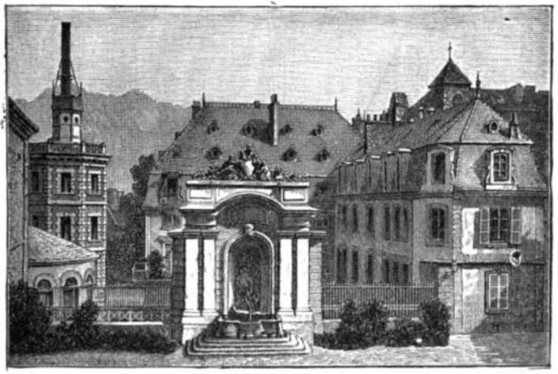
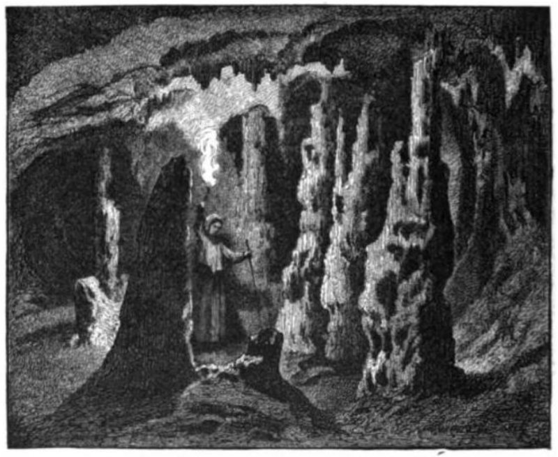
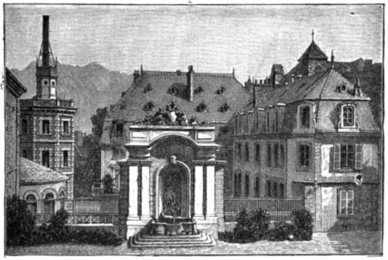
 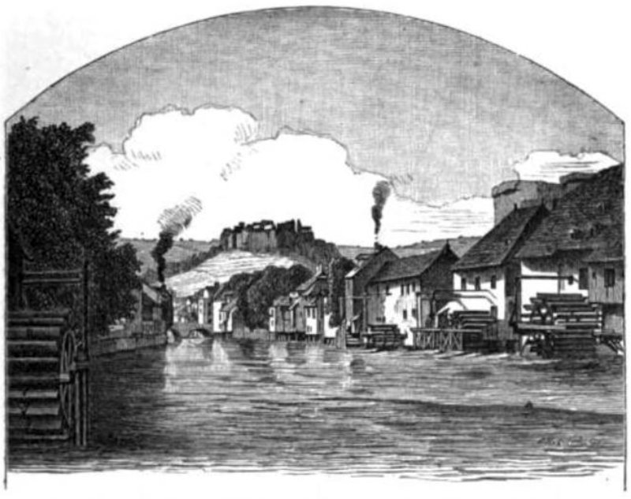
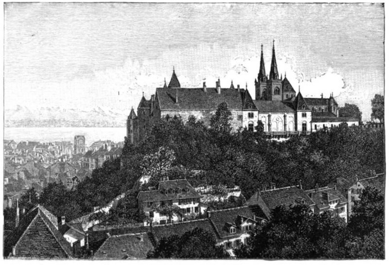
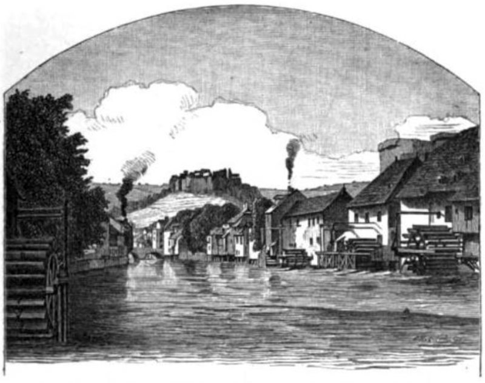
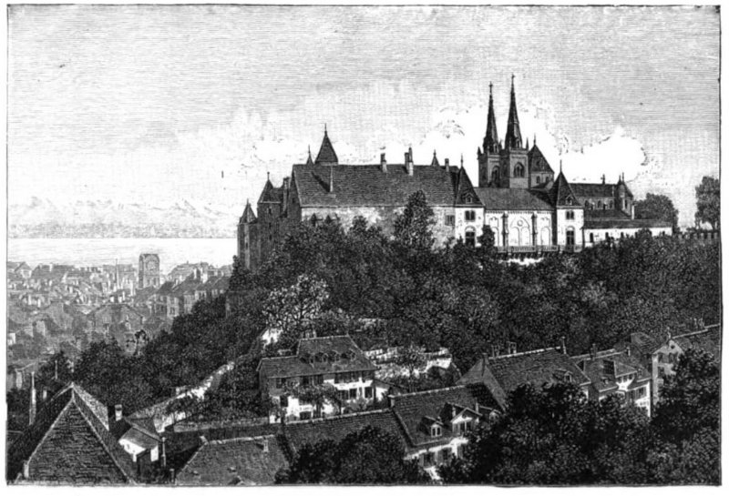
-
Memories of the Black Forest
Methodist Magazine Vol. 33 1891, pg14
The Black Forest, and its people, merit your consideration. #germany #witch #supernatural #gnome #fairy #wizard #nixie
-
The Story of Karl Ott
The Empty House And Other Ghost Stories
Pall Mall, Oct. 1896, pp. 189–200.English lady trifles with the affections of an Alpine German villager. #germany
-
A Haunted Island
The Empty House And Other Ghost Stories
Spectral native encounter during a stay by a lake in Canada. Connects to summering-in-canadian-backwoods. #indian #canada
-
Spread of the National Anthem
The Morning Post, 02/08/1899
Blackwood engages in public service (by jingo). #england
-
A Case of Eavesdropping
The Empty House And Other Ghost Stories
The Empty House And Other Ghost Stories
Pall Mall, Vol22, pp558-568Jim Shorthouse overhears a spectral German conversation in a meager, urban, US boarding-house. #JimShorthouse


-
A Spiritualist Camp in New England
MacMillan's Magazine, Vol 82 Iss 487 xx/05/1900
Humbug! #spiritualism #america
-
In Hungary with Tent and Canoe
The Boy's Own Annual 1901 Vol24 pg118
"Buffalo milk, when we could get it, was excellent." #danube #hungary #europe #river
-
Down the Danube in a Canadian Canoe
MacMillan's Magazine, VOL. LXXXIV, May-Oct. 1901 (pg 350)
Travelogue of an English camper in Central Europe. txt-pg-350, txt-pg-418
-
Summering in Canadian Backwoods
Longman’s Magazine Jan 1901
Pleasantness of the rural Great Lakes region of Canada. txt-pg-215 #canada
-
The Last Egg in the Nest
The Boy’s Own Paper, Vol. 24 No1232, 23/08/1902
Climbing English cliffs. #childrens #nature #romance #england #birds
-
At School in the Black Forest
The Boy's Own Annual, Vol. 27
The chief difficulty seemed to be that no real forest could contain a school and be enchanted at the same time; and it was only after two years’ actual sojourn in just such a place that I learned in how true a sense this could really be the case. #germany #german #BlackForest #school #fairy #kobold I-pdf280 II-pdf293
-
How Garnier Broke the Log-Jam
The Boy's Own Annual, Vol. 27
Logging is a dangerous business. #indian #canada #canuck
-
Testing His Courage
Pearson’s Magazine Sep. 1904
Knight-errant makes and appointment with a dragon. #england #india #romance
-
The House of the Past
Ten Minute Stories
The Theosophical Review, Vol. 34 No.200, 15/04/1904
The House of the Past (my transcript)A dream of ghosts. The Wikisource transcript was produced by me. #spirit #ghost #reincarnation
-
About Moose and Moose-Hunting
The Boy's Own Annual Vol. 28 1905
Blackwood discusses hunting. Connects to the-valley-of-the-beasts. #moose #canada
-
A Holiday Down the Danube with Punt and Tent
The Boy’s Own Paper Sep. 1 1906
Blackwood recounts a boating vacation. #danube
-
A Suspicious Gift
The Empty House And Other Ghost Stories
Struggling writer living in a cramped room, receives an unexpected visit from a mysterious man with questionable intentions. #NewYork #poverty
-
Keeping His Promise
The Empty House And Other Ghost Stories
A student is interrupted while studying late at night by a visitor who turns out to be a former friend. #Scotland #ghost
-
My Adventure with a Lion
The Boy’s Own Paper June 2 1906
My Adventure with a Lion (my transcript)Journalism intern covers a story in New York. #NewYork
-
Skeleton Lake: An Episode in Camp
The Empty House And Other Ghost Stories
Mis-deeds in the woods of Quebec. #canada
-
Smith: An Episode in a Lodging House
The Empty House And Other Ghost Stories
A medical student's book plays a role in his neighbor's supernatural pursuits. #Scotland
-
The Empty House
The Empty House And Other Ghost Stories
The Empty House And Other Ghost StoriesJim Shorthouse has a midnight encounter in a seaside house. #JimShorthouse
-
The Strange Adventures of a Private Secretary in New York
The Empty House And Other Ghost Stories
Jim Shorthouse is being sent on a mission by his employer to deliver valuable papers. #JimShorthouse
-
The Vanishing Redskins
The Boy's Own Jounal Vol29 1906
Part1, pg715 Part2, pg750 Part3, pg762Myths of the Algonquin. #review #indian #canada
-
The Wood of the Dead
The Empty House And Other Ghost Stories
Encounters with a mysterious old man in a wayside inn who speaks in a captivating manner and hints at a deeper purpose or knowledge. #england
-
With Intent to Steal
The Empty House And Other Ghost Stories
Jim Shorthouse tries not to sleep in a barn. #JimShorthouse #england
-
Max Hensig
The Listener and Other Stories
Max HensigNewspaper reporter interviews a German man accused of murder in seedy, boozy old New York. #NewYork
-
May Day Eve
The Listener and Other Stories
May Day EveLast night of April resembles Halloween, with moors, mist, birds, enchanted hills, and a folk-lorist to make sense of it.
-
Miss Slumbubble—and Claustrophobia
The Listener and Other Stories
Miss Slumbubble—and ClaustrophobiaEnglish spinster traveling on holiday has experiences difficulty in her train-car.
-
The Dance of Death
The Listener and Other Stories
The Dance of DeathA man cuts a rug with an anthropomorphic personification.
-
The Eccentricity of Simon Parnacute
The Lost Valley and Other Stories
The Eccentricity of Simon ParnacutePeter Pan: You can fly, you can fly; but almost a sermon. #fly #birds #spiritual
-
The Farmhouse on the Hill
The Australian Star, Sat 28 Dec 1907 page10
Southwest England could really use a Motel 6. #england #ghost #psychic #murder
-
The Insanity of Jones
Four Weird Tales
The Listener and Other StoriesA clerk clings to an old injustice.
-
The Listener
The Listener and Other Stories
The ListenerA man keeps a diary unaware of the badness of Hansens's disease. #ghost #haunted #sleepwalking
-
The Man Who Played Upon the Leaf
The Lost Valley and Other Stories
The Man Who Played Upon the LeafA pious man lives in the woods with a dog. #jura #fir #pagan
-
The Old Man of Visions
The Old Man of Visions (transcribed by me)
The Listener and Other StoriesEncounter with a mystic prompts an epihany & spiritual awakening. hand-transcribed
-
The Willows
The Willows (1907)
Exploration of a desolate and isolated region along the Danube River, characterized by a vast expanse of willow bushes and marshes.
-
The Woman's Ghost Story
The Listener and Other Stories
The Woman's Ghost StoryA woman encounters a mysterious man in a haunted house, where she initially mistakes him for the caretaker but later realizes he is a ghost. Alternate Title: "The Specter that Asked for a Kiss" #ghost
-
Ancient Sorceries
John Silence, Physician Extraordinary
John Silence receounts an episode from a village in France which was "a cause du sommeil et à cause des chats". #JohnSilence
-
A Psychical Invasion
John Silence, Physician Extraordinary
Felix Pender is experiencing a psychological affliction characterized by a deep-seated fear or horror, resulting in the loss and transformation of his talent, and a desperate need for John Silence's help. #JohnSilence
-
Our Adventure with the Danube River-Police
The Boy's Own Annual, Vol 31, 1908, pg 234
Blackwood's group of 4 avoids getting shaken down by Bavarians and repels an act of river piracy. #danube #bavaria
 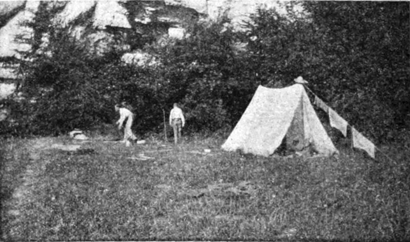
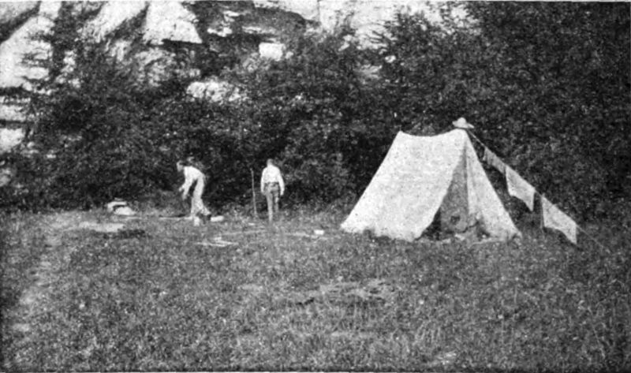
-
Secret Worship
John Silence, Physician Extraordinary
An English merchant attends a school reunion. #JohnSilence #germany #witch #demon #haunted #rosicrucian
- Stodgman's Opportunity The Westminster Gazette, 5 December 1908
-
The Camp of the Dog
John Silence, Physician Extraordinary
Connecting to "The Wendigo" and "Skeleton Lake" Canadian Indian ancestry frees the spirit and the wilderness inspires the call of the wild. #JohnSilence #sweden #lycanthropy #AstralProjection #indian #CallOfTheWild
-
The Kit-Bag
Pall Mall, Dec. 1908
The Kit-BagIf a murderer can't take it with him, but perhaps it can take him. #england #london #murder #ghost
-
The Nemesis of Fire
John Silence, Physician Extraordinary
Best beware of souvenirs from the middle-east. Connection: #StephenKing #BlackTower #JohnSilence #ka #haunted #egypt #elemental #horus #pagan #mummy #england #sand
-
The Story Mr. Popkiss Told
The Story Mr. Popkiss Told
The Herald (Melbourne, Vic.), 8 Feb. 1909Transportation during holidays is often not uneventful. #psychic #paranormal
-
Carlton's Drive
The Lost Valley and Other Stories
Carlton's DriveAn Englishman sowing oats maybe finds himself a passenger in the Cóiste Bodhar.
-
Clouds and Mountains
Country Life, Volume 25 1909 pg821
"…that awful hissing that more than anything else strikes terror to the heart of the climber…" #jura #cloud #MountainClimbing #snow
-
Entrance and Exit
Ten Minute Stories
Entrance and ExitA man disappears in the woods. #HigherSpace #pine #snow #ghost
-
The Boy Messenger: A Christmas Phantasy
The Burrowa News (NSW), 30 Apr 1909
A group of friends celebrate the holidays on bicycle. #christmas #banshee
-
The Face of the Earth
Leader (Melbourne) 26-Jun-1909
"Thus there gradually grew up about the Innocent Spinrobin a queer sense that the world was no longer quite the same as he had hitherto seen it." #german #english #LivingEarth
-
The Laying of a Red-haired Ghost
Lady's Realm, Vol. 26
A gentleman with piggy eyes makes demands of his widow postmortem. #ScoobyDoo #england #ghost
-
The Lock of Grey Hair
The Lock of Grey Hair, Belfast Weekly News 09/12/1909
Would be good to include. The page scan is not great and possibly not able to transcribe.
-
You May Telephone From Here
Ten Minute Stories
The Bundaberg Mail and Burnett Advertiser (Qld.) 26 June 1909 (Titled: "A Trunk Call")Eerie and mysterious events surrounding the telephone ringing in the flat. Included in "Ten Minute Stories" under the title "You May Telephone from Here" and in The Bundaberg Mail as "A Trunk Call."
-
From the Swiss Lakes
Country Life 1910-03-19: Vol 27 Iss 689
An impression upon arriving at Lake Geneva. #switzerland
-
If the Cap Fits
If the Cap Fits
Paranormal sensitivity may exist in London. #london
-
Imagination
Ten Minute Stories
An author gets stuck while writing a story about centaurs. Connects to the novel "The Centaur". #centaur #pagan
-
In a Strange Land
The Wollondilly Press (NSW) 19 October 1910 - Page 3
Bendigo Advertiser (Victoria) 10 September 1910 (Title: "Railway Traveling in the Caucasus")Blackwood takes a train to Eastern Europe. In "Railway Traveling in the Caucasus," Blackwood sends a postcard and this is included as a part of "In a Strange Land." #russia #europe
-
Old Clothes
The Lost Valley and Other Stories
Old Clothes#reincarnation #somnambulism #hypnotism #england #belgium
-
Special Delivery
Pan's Garden
"Can't you hear me knocking?" #jura #psychic #ghost

-
The Lost Valley
Tales Of The Uncanny and Supernatural
The Lost Valley and Other StoriesRussian lady comes between English twins. Archive scan is missing chapter-5 title. Hathi is missing multiple pages. #jura #ghost #psychic #twins #kent
-
The Man From the 'Gods'
The Lost Valley and Other Stories
An allegory of inspiration and artistic vision in the English theater. #england #psychology #spirit #drugs #theater
- The Message of the Clock Nash's Magazine, vol. 2 No. 15, xx/06/1910
-
The Price of Wiggins's Orgy
The Lost Valley and Other Stories
[ The Price of Wiggins’s OrgyWiggins has a big night. #england Story on the Wayback Machine contains vandalism.
-
The Singular Death of Morton
The Singular Death of Morton
The Singular Death of Morton
The Tramp, Vol. 2 No. 10 xx/12/1910A vampire story.
-
The South Wind
Pan's Garden
Tales Of The Uncanny and Supernatural
Illawarra Mercury (Wollongong, NSW) 13 May 1910 (Title: "The Messenger Came at Midnight")"He comforteth the earth with the south wind." Included in "Tales of the Uncanny and Supernatural" under the title "The South Wind" and the Illawarra Mercury as "The Messenger Came at Midnight." #switzerland

-
The Sea Fit
Pan's Garden
The Sea FitA sailor onshore in Dorset, England communes with the sea. #england #sea #sand #pagan

-
The Strange Experience of the Rev. Phillip Ambleside
Pall Mall Mar. 1910: Vol. 45 Iss. 203
The Lost Valley and Other Stories (Titled: "Perspective")
"Perspective"Divine providence on the mountainside. A version of this story was originally published under the title "The Strange Experience of the Rev. Phillip Ambleside" and later published in "The Lost Valley and Other Stories" as "Perpective." #alpine #faith
-
The Wendigo
The Wendigo(1910)
The Lost Valley and Other StoriesThe call of the wild. #canada
-
Accessory Before the Fact
Ten Minute Stories
Accessory Before the FactGerman travelers raise international tensions in England.
-
Clairvoyance
Pan's Garden
ClairvoyanceA haunted room and the unfulfilled yearnings and pain associated with it.

-
Discovering Russia on Foot
Country Life 1911-12-16: Vol 30 Iss 780
"He will calmly beat a man to death for stealing a horse, yet will also show a compassionate and generous hospitality that is tender in the last degree."#review #russia #terrorism #politics
-
Dream Trespass
Ten Minute Stories
Dream TrespassDisappointment and exhaustion experienced by a friend during their walking tour."
- In A Jura Village The Morning Post, 26 December 1911
-
Monsieur Joseph of the Ski
Country Life 1911-11-11: Vol 30 Iss 775
Commentary on snow-skiing and review of a Swiss ski-maker. #jura
-
On Wings
Country Life 1911-05-13: Vol 29 Iss 749
Birds are transcendant, awe-inspiring and connected to works set on the Danube and the Canadian backwoods.
-
Spring and the Mountaineer
Country Life 1911-04-22: Vol 29 Iss 746
Blackwood anticipates travel to the Alps. #pagan #pan #europe #alps #MountainClimbing
-
The Deferred Appointment
Ten Minute Stories
The Deferred AppointmentA gentleman's portrait is made. #ghost #SpiritPhotography
-
The Empty Sleeve
The Wolves of God, and Other Fey Stories
Two brothers in London own a violin while the elevator operator wears a Bowler hat.
-
The Golden Fly
Pan's Garden
The Golden FlyAn insect provides spiritual awakening.

-
The Messenger
Pan's Garden
The MessengerAn encounter with an approaching messenger from another world, causes feelings of apprehension and awe.

-
The Prayer
Ten Minute Stories
The PrayerExperiment with a mysterious substance that enhances perception of thoughts, leading to following a thought-stream and trying to trace it to its source.
-
The Transfer
Pan's Garden
The TransferEnergy vampire Colin Robinson fertilizes his garden. #psychic

-
Two in One
Ten Minute Stories
Two in OneA man spends the day with himself.
-
Algonquin Songs and Legends
Part I - Country Life 1912-11-02: Vol 32 Iss 826
Part II - Country Life 1912-11-23: Vol 32 Iss 829“My brother told me, many years ago, Some wizards had a quarrel, and they slew One of their number, took his corpse away, And ate it on the isle of Grand Manan, Sitting upon a ledge above the sea.” #america #indian #review
-
An Arab Pilgrimage
Country Life 1912-10-26: Vol 32 Iss 825
Blackwood observes a caravan stopover. #egypt #desert #sand #helouan #bedouin
-
Ancient Lights
A Round of Tales
Ancient LightsTresspassers will be persecuted.
-
Animal Life in the Egyptian Desert
Country Life 1912-07-13: Vol 32 Iss 810
The inhospitable egyptian desert teems with life. #desert #egypt #nature
-
A Voice in the Wilderness
Country Life 1912-11-23: Vol 32 Iss 826, pg 598
"One reads every day such phrases as ‘our commercial, national and imperial welfare’⁠—commercial first, national second, imperial third, and spiritual nowhere." #review #Beauty #Russia #Beauty #MiddleEast
- Egyptian Antiquities The Morning Post, 9 April 1912
-
Failure of the Swiss Winter Season
Country Life 1912-01-27: Vol 31 Iss 786
“For when it comes,” they say, “it will be terrible, and worth waiting for!” #journalism #jura #switzerland #snow #FakeNews
- La Mauvaise Riche The Westminster Gazette, 30 November 1912
-
Sand
Four Weird Tales
Pan's GardenAn encounter with Ka in the desert of Egypt. Connection: #StephenKing #DarkTower #ka #egypt

-
The Attic
Pan's Garden
The AtticA story of feline redemption in the Swiss winter. #jura

- The Bitter Bit The Saturday Westminster Gazette 17 February 1912
-
The Destruction of Smith
Pan's Garden
Does a city have a soul? #WesternUS #america #arizona #supernatural #spirit

-
The Egyptian Desert from Helouan
I: Country Life 1912-03-16: Vol 31 Iss 793
II: Country Life 1912-04-13: Vol 31 Iss 797The desert of Egypt is fascinating, rather than cruel.
-
The Garden of Survival
The Garden of Survival
Colonial Governor on returning to England: "I found her a cross between a museum and an American mushroom town that advertises all the modern comforts with a violent insistence that is meant to cloak their very absense. Also, "a bird's song always makes me think of God." #psychic #beauty #ghost #england #phantasmagoria #christian #spiritual Connects to a-memory-of-beauty
-
The Glamour of the Snow
Four Weird Tales
Pan's Garden"Do you want to BE a snowman?" #pagan #snow #witch #elemental

-
The Goblin's Collection
Ten Minute Stories
The Goblin's CollectionIrish mischief in England.
-
The Heath Fire
Pan's Garden
The fire of the sun, the deep earth, human life, and the "burning bush": they are all connected. #england #elemental #fire #christian

-
The Man Who Found Out
The Wolves of God, and Other Fey Stories
Introduces (12 years earlier) the idea that Lovecraft introduces as his “necronomicon” in 1924 and this story generally seems to foreshadow the Lovecraft mythos. It can be read as responding to special relativity from 1905. The connection becomes more explicit in ‘A Victim of Higher Space’ (1914), so I conclude that this reading is correct. Blackwood bridges Einstein to Lovecraft. #england #lovecraft #necronomicon
-
The Man Whom the Trees Loved
The Man Whom the Trees Loved
Pan's Garden
-
The Return
Pan's Garden
The ReturnA gentleman receives an impression from beyond. #paranormal #supernatural #ghost

-
The Second Generation
Ten Minute Stories
The Second GenerationA gentleman seeks a second chance romance. #england #arizona #hallucination #non-weird #romance
-
The Temptation of the Clay
Pan's Garden
The Temptation of the ClayA man is embraced by nature through his wife, then rejected through his neice. #indian #russian #england #america #pine #possession; Connects to "The Man Who Played Upon the Leaf"

-
The Terror of the Twins
Tales Of The Uncanny and Supernatural
The Lost Valley and Other Stories
The Terror of the TwinsThis story demonstrates a dramatic example of Blackwood's method viewpoint shift. #ghost #curse #soullessness #twins
-
The Unconquerable Charm of Sussex
Country Life 1912-07-06: Vol 32 Iss 809
A review of "The Four Men" by Hilaire Belloc. #review #england
-
The Whisperers
Ten Minute Stories
The WhisperersA man is distracted by books while writing. #jura #paranormal
-
Wayfarers
Incredible Adventures
Injured and is in a state of confusion, unable to recall the events leading to their current situation or identity.
-
Wind
Ten Minute Stories
An essay on the titled subject, some scientific insights, and comments on its role in poetry. #christian #nature #jura
-
A Barmecide Feast
Country Life, Vol. 34 No. 863, 19 July 1913
Jones gets the munchies. #non-weird
-
Arolla and Its Climbs
Country Life, Vol. 34 No. 885, 20 Dec 1913
Blackwood talks about mountain-climbing. #switzerland #MountainClimbing
-
Before the Season
Country Life, Vol. 34 No. 886, 27 Dec 1913
The unseen preparations for the winter tourist season. #switzerland #alps #snow
-
Egypt: An Impression
Country Life 1913-11-08: Vol 34 Iss 879
Egypt casts a spell upon the visitor. There is overlap between "Egypt: An Impression" and "The Spell of Egypt" but they are sufficiently different to be distinct works. #egypt
- H.S.H. Day and Night Stories
-
Learning to Ski
Country Life Vol. 34, pg708
Skiing is rewarding but there are pitfalls. #switzerland #skiing
-
Mrs. Gurney’s Poems
Country Life 1913-05-31: Vol 33 Iss 856
Blackwood's review of a book of poems. #england #poetry #nature #review
-
The Israelites Track from the Red Sea to Mount Sinai
Country Life Vol. 34
Blackwood reviews a travelogue through the Middle East. #desert #christian #review
-
The Kiss of a Psychologist
Country Life 1913-09-13: Vol 34 Iss 871
"For a moment he knew something of what Dreyfus felt upon his Devil's Island." Blackwood appears to be reading Freud. #romance
- The Story Hour The Morning Post 18 November 1913
- The Tradition Day and Night Stories
- Transition Day and Night Stories
-
Value. In Life and Death. Changed Views.
West Gippsland Gazette (Warragul, Vic.) Tue 25 Mar 1913 Page 5 VALUE.
Blackwood writes and obituary for an unnamed English lady, who has dementia, in the Jura. #english #jura #switzerland #obituary
- Who Was She? The New Witness, Vol. 2 No. 34, Vol. 2 No. 37, & Vol. 2 No. 43; 26 June 1913, 17 July 1913, and 28 August 1913
- Winter Sports in Switzerland Source unknown
-
With the Russian Pilgrims to Jerusalem
Country Life Vol. 34
Blackwood reviews of a book of gonzo journalism. #Russia #MiddleEast #christian #review
-
A Bit of Wood
Day and Night Stories
An unimportant thing along the Italian/Austrian border.
-
A Descent into Egypt
Incredible Adventures
A man in Egypt is drawn to the past. #helouan #egypt #pagan
- A Desert Episode Day and Night Stories
-
A Victim of Higher Space
Day and Night Stories
#JohnSilence
-
Breakfast Honey
The Morning Post 9 June 1914
- By Water Day and Night Stories
-
Faith Cure on the Channel
Ten Minute Stories
The narrator gets queasy on the water. #england #france
-
Her Birthday
Ten Minute Stories
A man shops for a gift. #romance
-
Jimbo's Longest Day
Ten Minute Stories
Algernon shares the magic of the solstice with his nephew. #fairy #england #sussex #solstice #childrens
-
Let Not the Sun
Ten Minute Stories
Let Not the Sun -
Maria
The Morning Post 28/03/1914
Children’s fantasy concerning the plotting of a train crash. Reprinted as Chapter III of The Extra Day
-
News v. Nourishment
Ten Minute Stories
News v. NourishmentA gentleman dines.
- Non-Human The New Witness, Vol. 5 No. 110 10 December 1914
-
Pines
Ten Minute Stories
Pines
Country Life, Volume 25 1909 pg769Remarks on the merits of the named sort of tree.
-
Strange Disappearance of a Baronet
Ten Minute Stories
You are what you have. #england #ScoobyDoo #kafkaesque
-
The Daisy World
The Quest, Vol. 5 No. 4 xx/07/1914
"Jinny, Jimbo and Maria⁠—three survivals in an age when education considers childhood a disease to be cured as hurriedly as possible⁠—took their adventure…" #uncle #nature #children #elf
-
The Damned
Incredible Adventures
In the dogmatic hell of Blackwood's theology, nothing ever happens.
-
The Doll
Tales Of The Uncanny and Supernatural
Beware strangers bearing gifts; also karma. #india #england #curse #idée-fixe #harsh-language -- Connects to the "Chuckie" franchise.
-
The Falling Glass
Country Life 1914-05-23: Vol 35 Iss 907
Tongues of Fire and Other Sketches 23/11/1924"I admit there was this childish pride and pleasure in the disappointment, and to be right even in prophesying disaster holds a faint satisfaction." #alps #MountainClimbing #storm #snow #nature Connecst to the-south-wind.
-
The Impulse
Ten Minute Stories
The Impulse -
The Invitation
Ten Minute Stories
The InvitationTwo gentlemen have lunch in London. #england
-
The Lease
Ten Minute Strories
Algernon's friend is helping his friend with a lease. #england #chelsea #humor #eyebrows
-
The Little Beggar
Tales Of The Uncanny and Supernatural
Tongues of Fire and Other Sketches 23/11/1924An English man accompanies a child to the train. #ghost
-
The Man Who Was Milligan
Tales Of The Uncanny and Supernatural
Tongues of Fire and Other Sketches 23/11/1924Art has the power to transport the viewer to far-away lands. #china #england #psychic #paranormal
-
The Miracle
The Quest, Vol VI 1-4, Oct. 1914 - Jul. 1915, pg 256
Blackwood finds beauty in an emergent group-soul during mobilization for WWI. #beauty #god #war #group-soul #christian
-
The Night Wind
Country Life 1914-05-09: Vol 35 Iss 905
Uncle Henry personifies that wind and illustrates his writing process, with kids. #uncle #wind #writing
- The Philosopher The Westminster Gazette 13 June 1914
-
The Pikestaffe Case
Tales Of The Uncanny and Supernatural
Tongues of Fire and Other Sketches 23/11/1924"And it affronted her that some of these were German. A writer named Einstein was popular with her lodger and that, she felt, was a pity, as well as a mistake in taste." #england #einstein #HigherSpace Connects to "The Man Who Was Mulligan", "Questions and Answers"; also "Alice in Wonderland".
-
The Regeneration of Lord Ernie
Incredible Adventures
A theologian contemplates the relationship between energy and entropy. Connections:"Ghostbusters" #jura #elemental #canadian #english #giant #pagan #fire #witch #psychic #supernatural #sexual #PG
-
The Sacrifice
Incredible Adventures
A mountain-climber has a crisis of faith enroute to the "Tour du Néant". #switzerland #MountainClimbing #christian #pagan
-
The Secret
Ten Minute Stories
An author's eyebrows dance through lunch. #england #writing #eating
-
The Soldier's Visitor
The Country Gentleman and Land & Water
A convalescing casualty of war is visited by the quasi-pagan personification of his country. #war #pagan #brittania #jingoism #beauty
-
The Trod
Tales Of The Uncanny and Supernatural
A fairy tale. #fairy #england #soullessness
-
The Wings of Horus
Day and Night Stories
The Century Illustrated Monthly Magazine Volume 89 pg129 1915"The Romance of Hawk Man and the Dove Girl." #russia, #egypt #horus
-
The Winter Alps
Country Life 1910-12-24: Vol 28 Iss 729 pg930
Ten Minute StoriesAn appreciation of the cold season in the mountains. #switzerland #alps
-
Up and Down
Ten Minute Stories
Algernon has a disjointed conversation in the Club, with his good-hearted friend. #VagueFriend #england #alcoholism
-
Violence
Twenty-Three Stories by Twenty and Three Authors
Ten Minute Stories - What Nobody Understands The Morning Post 17 February 1914
-
After the War
London Evening Standard 07/10/1915
"Don't. Mention. The war!" #war #england #germany #switzerland
-
Cain's Atonement
Day and Night Stories
Land and Water Country Gentleman Vol6 1915 - The Celestial Motorbus The Saturday Westminster Gazette 18 December 1915
-
The "Country Life" Anthology of Verse
Country Life 1915-12-25: Vol 38 Iss 990
"This modest little book enshrines a moment of our history in its songs of the war…" #review #england #war #poetry
- The God The Saturday Westminster Gazette 7 August 1915
- The Other Wing Day and Night Stories
- The Paper Man The Saturday Westminster Gazette 9 October 1915
-
The Permanent Reality
The Birmingham Daily Post 23 November 1915
War is hell, fairy-tales are necessary. #war #FairyTale
-
The Soul of Galahad
The Bookman V47 No. 290 Jan. 1915 pg 127
A sermon on mysticism is framed as a book review. #Review #rosicrucian
-
Think Victory!
London Evening Standard 25/11/1915
"In the beginning was the Word..." but then it veers into a national meditation program and seems motivated by a threatened strike. #war #buddha #hippy #meditation #labor #religion
- Camping Out Blackie's Children's Annual 1916
-
Imagination Wakes
The Outlook 1916-04-26
This is a magazine article containing Chapter 7 of the novel "The Extra Day" accompanied by a short biography of Blackwood and is being skipped for inclusion with the novel itself.
-
My Old Tunes
The organ grinder's songs from "The starlight express"
#childrens #poem #song
- Proportion The Saturday Westminster Gazette 5 August 1916
-
Sleep and How to Do Without It
Vanity Fair 1916-04: Vol 6 Iss 2
txt-pg-77, txt-pg-114
-
The Blue-Eyes Fairy
The organ grinder's songs from "The starlight express"
A child's song about a fairy. #childrens #song
-
The Exiled Gods
The Quest, Vol. 6 No. 4 xx/07/1916
Day and Night Stories (Title: "Initiation")An American recounts a "come to Hermes" meeting and it appears his ancestor was deified through scholarship. Originally published in "The Quest" as "The Exiled Gods" another version of the story was later published in "Day and Night Stories" as "Initiation." #pagan #american #switzerland
- The Occupant of the Room Day and Night Stories
- The Snake The Saturday Westminster Gazette 18 March 1916
-
To the Children
The organ grinder's songs from "The starlight express"
Disillusionment with the grown-up world contrasted with the innocence and wonder of children's imagination. #childrens #poem
- An Egyptian Hornet Day and Night Stories
-
Switzerland in War-Time
Country Life 1917-09-29: Vol 42 Iss 1082
Switzerland, a hub of activity and recovery, is much changed. #switzerland
- The Touch of Pan Day and Night Stories
- The Tryst Day and Night Stories
-
Karma
Karma
History repeats, ladies, and don't get in the way of men doing as their country asks or you will be cursed for millenia. (w/Violet Pearn) #romance #egypt #greece #italy #england #war Connects to #JohnSilence and Nephele.
-
S.O.S.
The Century Magazine, Mar. 1918
S.O.S.
Tongues of Fire and Other Sketches 23/11/1924#jura
-
The Memory of Beauty
Land & Water, Vol. 70 #2904 Jan 3 1918
A man convalesces at the tail end of WWI. #war #england
-
Alexander Alexander
Alexander Alexander
Tongues of Fire and Other Sketches 23/11/1924
The Saturday Westminster Gazette. 6 Sep. 1919Blackwood makes use of emphatic italics. #psychology #uncle
-
Switzerland: Present Conditions and Future Prospects.-I
Country Life 1919-03-22: Vol 45 Iss 1159
Switzerland is eager, but not yet a ready, to resume the tourist trade. This story is labeled as "I", but no "II" was subsequently published. #switzerland #english #war #armistice
-
The Call
The Wolves of God, and Other Fey Stories
A bittersweet ghost story set in England after the Armistice.
-
The Decoy
The Wolves of God, and Other Fey Stories
A trio spend the night in an unpretentious house with a bad reputation. #ghost #haunted #england #kent
-
The Other Woman
Tongues of Fire and Other Sketches 23/11/1924
The abstract notion of Beauty impedes relationships and work. #beauty
- The Perfect Poseur The Saturday Westminster Gazette 9 October 1915
-
The World-Dream of McCallister
Tongues of Fire and Other Sketches 23/11/1924
Blackwood's practice making a story arc actually be a perspective arc, in the context of the ending of WWI. #england #war
-
Wireless Confusion
The Wolves of God, and Other Fey Stories
Depth perception and spooky action at a distance (quantum entanglement?) in WW-I England. #england #london #war #psychic
- Chinese Magic The Wolves of God, and Other Fey Stories
-
First Hate
The Wolves of God, and Other Fey Stories
Love at first sight is as strong as hate at first sight. #canada #china #murder
-
Running Wolf
The Wolves of God, and Other Fey Stories
A man is visited while camping by a lake. #indian #canada #canoe #willow
-
The Olive
The Best of British Short Stories (1922)
Tongues of Fire and Other Sketches 23/11/1924The protagonist becomes infatuated with a girl after a humorous encounter involving an olive, leading to a late-night rendezvous that seems reckless and irrational.
-
Through the Crack
Through the Crack
Play based on "The Education of Uncle Paul" novel "The Extra Day." (w/Violet Pearn)
- Changing 'Ats Time and Tide, Vol. 2 No. 50
-
Confession
The Wolves of God, and Other Fey Stories
Canadian veteran struggles with shell-shock (and more) in the London fog. #london #england #war
-
Egyptian Sorcery
The Wolves of God, and Other Fey Stories
A financial investment in Egypt is threatened. #egypt #possession #AstralProjection #psychic
-
Nephelé
Tongues of Fire and Other Sketches 23/11/1924
After a gentleman digs up a box, a lady dances in sandals, and this could be a problem. #roman #romance #dance #reincarnation
-
Onanonanon
The English Review 1921-03: Vol 32, pg248
A spy for the empire is sick again. #war #england #switzerland #hallucination #doppleganger #ScoobyDoo
-
The Halfway House
The Halfway House
Play. (w/Elaine Ainley)
-
The Lane That Ran East and West
The Wolves of God, and Other Fey Stories
A fern seed carries a dream on English lane. #england #kent #mexico #psychic
-
The Tarn of Sacrifice
The Wolves of God, and Other Fey Stories
A veteran hikes near England's Roman wall. #ghost #possession #pagan #war #england
-
The Valley of the Beasts
The Wolves of God, and Other Fey Stories
Grimwood has a come-to-Ishtot meeting while hunting. #indian #canada #moose #canoe #pagan
-
The Wolves of God
The Wolves of God, and Other Fey Stories
Man returns from Canada to his brother in the Orkneys.
-
Vengeance Is Mine
The Wolves of God, and Other Fey Stories
Unforgiving Belgian women schedule a come-to-Odin meeting. #war #pagan
-
White Magic
White Magic
Play. (w/Bertram Forsyth)
- Genius The Weekly Westminster Gazette 15 July 1922
-
Lost in the Alps
The Living Age Vol. CCCXV Sep. 8 1922
Morning Post / Tory Daily
Tongues of Fire and Other Sketches 23/11/1924
In a story that may be non-fiction, a botanist has not returned from his hike. #alpine
- Adventurous Memories Cassell’s Magazine of Fiction, July-Nov. 1923
-
Tongues of Fire
The English Review, Vol. 36 No. 4, Apr. 1923
Georgian Stories 1924
Tongues of Fire and Other Sketches 23/11/1924Be nice, or be cursed to die by tuberculosis. Seems to connect to the Stephen King novel, "Thinner." #england #chelsea #curse #disease #drugs
-
A Continuous Performance
Tongues of Fire and Other Sketches 23/11/1924
The natural word is unlike poetry in that it is profound and unpretentious. #england #poetry #nature
-
A Man of Earth
Tongues of Fire and Other Sketches 23/11/1924
A mining engineer has a certain connection to dwarves. Story connects to the Caucasus travel stories. #dwarf #caucasus #german #english #surrey
-
Malahide and Forden
Malahide and Forden
Tongues of Fire and Other Sketches 23/11/1924Three actors make a trippy day trip to "Barton in the beans." #einstein #christian #angel #psychedelic
-
Petershin and Mr. Snide
Tongues of Fire and Other Sketches 23/11/1924
Never worry about putting your tongue on a frozen flagpole. Reminiscent of Confederacy of Dunces in its use of dialect. #england #snow #psychology #humor
-
Picking Fir-Cones
The English Review Vol29 1919
Tongues of Fire and Other Sketches 23/11/1924A childhood near-death experiece leaves the narrator philosophical, spiritual, and mystical.
-
Playing Catch
Tongues of Fire and Other Sketches 23/11/1924
That God does not play dice with the universe, does not imply that angels don't play ball with the universe. #einstein #astronomy
-
The Laughter of Courage
Tongues of Fire and Other Sketches 23/11/1924
A man enjoys himself at the cinema. May be non-fiction. #england #war
-
The Open Window
Tongues of Fire and Other Sketches 23/11/1924
An English couple trim the hedge, and decide to travel abroad. #england #travel
-
The Spell of Egypt
Tongues of Fire and Other Sketches 23/11/1924
Ruminations on the exhumation of King Tut. There is overlap between "Egypt: An Impression" and "The Spell of Egypt" but they are sufficiently different to be distinct works. #egypt
-
Explorers’ Ghost Stories
Occult Review 1925 v42 Aug. p16
A spiritualist researches the literature. #ghost #indian #war #sea
-
Full Circle
The English Review 1925-05: Vol 40
A realization of the passing of time, which is triggered by his encounters with a young boy over the years.
- Hands of Death The Bolton Evening News xx/12/1925
- Chemical The Ghost Book (ed. Cynthia Asquith) xx/xx/1926
-
Engine
The Merry-Go-Round, Vol IV No 1 Nov1926
Children's poem about an astral mail-truck. #childrens #poem
-
If I Were You
The Merry-Go-Round, Vol IV No 10 Aug1927
Children's poem about childhood hijinks and an absence of parental self-awareness. #childrens #poem
-
Questions and Answers
The Merry-Go-Round, Vol IV No 5 Mar1927
Children's poem about how adults are just faking it. #childrens #poem
-
The Star
The Merry-Go-Round, Vol IV No 2 Dec1926
Children's poem about a star. #childrens #poem
-
Tobys Birthday Presents
The Treasure Ship (ed. Cynthia Asquith) pg158 xx/xx/1926
A cat, a tortoise and, a nowl. #england #children #christian
-
Jack of the Inkpot
NSW Dept of Education (1927-01-31), Magazine of Literature.
Ink is messy. #child #poem
- Mr. Cupboard, or The Furniture’s Holiday Number Five Joy Street xx/09/1927
-
Sambo and Snitch
The Merry Go Round, 1925-1927; Chapters:
1
2
3
4
5
6
7
8
9
10
11
12
13
14
Connects to a-continuous-performance in the idea of nature being presented as a book to be read. #childrens #nature
-
Spring in Switzerland
The Spectator 1927-04-02: Vol 138 Iss 5153
Switzerland is forever young. #switzerland
-
The Crossing
The Crossing
Play. (w/Bertram Forsyth)
- The Cross-word Alien Time and Tide, Vol. 8 #1 07/01/1927
-
The Kingdom of the Heavens
UW-Mad Modern Essays of Various Types
Blackwood reviews a book about astronomy. #science #review
-
The Water Performance
Sails of Gold (ed. Cynthia Asquith) pg120 xx/xx/1927
Rose and Peter worship an Old God. #childrens #druid #saturn #pagan #sylph
-
Traveling Light
McClure's Vol59 Iss6 pp68-69,126
Essay on a philosophy of living. #philopsophy #biography #canada #NewYork
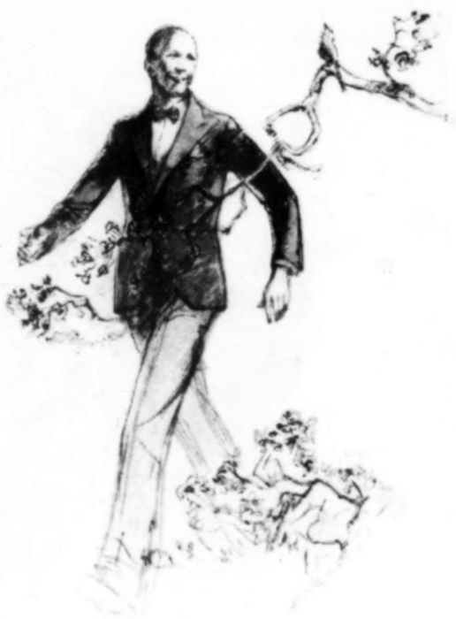


- Algernon Blackwood on Fiction Writing Fiction Writers on Fiction Writing (Excerpt), 1923
-
By Underground
Children's Book, Published by Oxford: Basil Blackwell
Fulls scans available HEREbut no date is included.
- Dr. Feldman The Strand Magazine, Volume 75, pg 426 (1928)
-
When Nick Dressed Up
"The Treasure Cave", by Asquith pg74 (1928)
-
Dreams and Fairies
No source available: The Bookman Special Christmas Number 1929, Hodder & Stoughton
-
Max Hensig
Max Hensig
Play based on the short story by the same name. (w/Frederick Kinsey Peile)
-
The Italian Conjurer
No source available: "The Golden Gift Book, pg3", Odhams Press (1939)